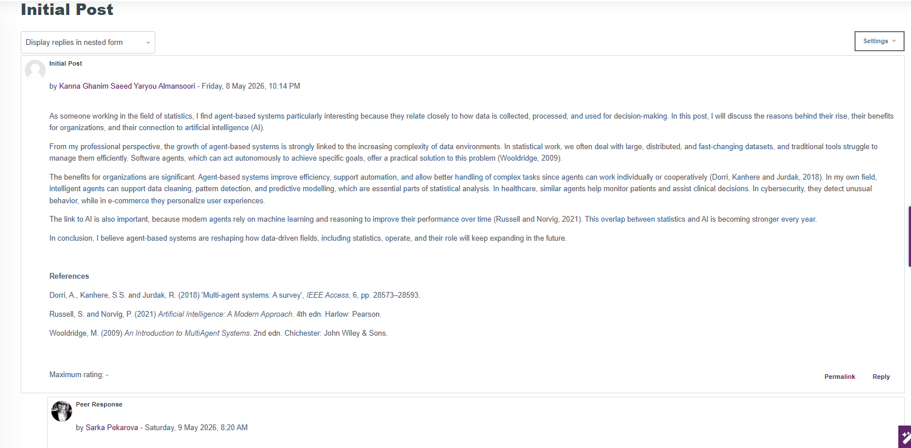
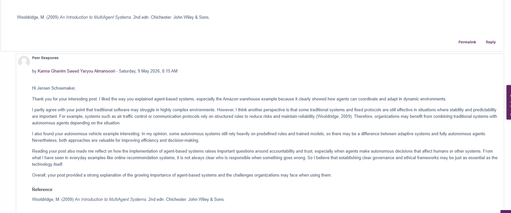
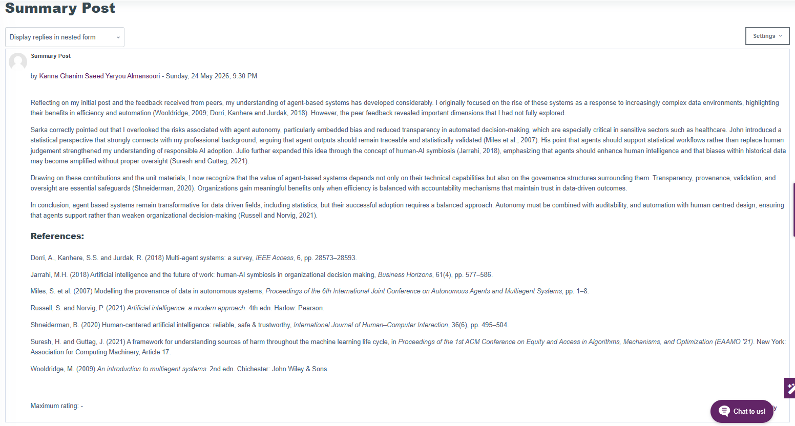

← Back to Intelligent Agents Module
Units 1–3: Collaborative Discussion 1
Agent-Based Systems
Duration: Units 1, 2, and 3 | Type: Formative | Status: ✓ Complete
Task Overview and Learning Outcomes
Intended Learning Outcomes
- Understand the purpose and use of agent-based computing.
- Understand key agent models and their AI foundations.
Discussion Overview
This discussion, completed across Units 1–3, explored the rise of agent-based systems, their organisational benefits, and insights gained through academic literature and peer discussion.
Discussion Topic
Discuss the rise of agent-based systems and the benefits they offer organisations, using at least three academic references.
Discussion Structure
Unit 1 – Initial Post (200+ words)
- Explain the rise of agent-based systems.
- Discuss benefits (autonomy, scalability, flexibility, decision-making).
- Include at least three UoEO Harvard references.
Unit 2 – Peer Responses (2 × 200–300 words)
- Respond to two classmates.
- Provide constructive feedback, improvements, and alternative viewpoints.
Unit 3 – Summary (≈300 words)
- Reflect on key learning from the discussion.
- Summarise the impact of peer feedback.
- Highlight the value of agent-based computing in AI.
Discussion Evidence: Forum Posts
Unit 1 – Initial Post
Topic: Agent-Based Systems and Their Rise in Modern Data Environments
Word Count: 289 words | References: 3
Content
As someone working in the field of statistics, I find agent-based systems particularly interesting because they relate closely to how data is collected, processed, and used for decision-making. In this post, I will discuss the reasons behind their rise, their benefits for organizations, and their connection to artificial intelligence (AI).
From my professional perspective, the growth of agent-based systems is strongly linked to the increasing complexity of data environments. In statistical work, we often deal with large, distributed, and fast-changing datasets, and traditional tools struggle to manage them efficiently. Software agents, which can act autonomously to achieve specific goals, offer a practical solution to this problem (Wooldridge, 2009).
The benefits for organizations are significant. Agent-based systems improve efficiency, support automation, and allow better handling of complex tasks since agents can work individually or cooperatively (Dorri, Kanhere and Jurdak, 2018). In my own field, intelligent agents can support data cleaning, pattern detection, and predictive modelling, which are essential parts of statistical analysis. In healthcare, similar agents help monitor patients and assist clinical decisions. In cybersecurity, they detect unusual behavior, while in e-commerce they personalize user experiences.
The link to AI is also important, because modern agents rely on machine learning and reasoning to improve their performance over time (Russell and Norvig, 2021). This overlap between statistics and AI is becoming stronger every year.
In conclusion, I believe agent-based systems are reshaping how data-driven fields, including statistics, operate, and their role will keep expanding in the future.
Initial Post Screenshot

Figure 1: Initial post discussing the rise of agent-based systems from a statistical perspective
Unit 2 – Peer Response 1: Hamad Abulla M KH Al-Jabir
Peer's Key Argument
Hamad explained the technical side of agent-based systems clearly, focusing on autonomy and decentralized decision-making. He emphasized how organizations increasingly use these systems because traditional centralized systems struggle to react quickly in fast-changing environments.
My Response
Hi Hamad,
I enjoyed reading your discussion because you explained the technical side of agent-based systems very clearly, especially the ideas of autonomy and decentralized decision-making. I agree that organizations are increasingly using these systems because traditional centralized systems can struggle to react quickly in fast-changing environments. Your point about multi-agent systems working together to solve problems more efficiently was also very interesting.
I also found your question about how much autonomy organizations should give to intelligent agents very important. In my opinion, agents can handle routine and data-heavy tasks effectively, but major business decisions should still involve human supervision. Although AI systems can process information faster than humans, they may still make errors or create ethical concerns if there is no human control, especially in industries such as healthcare or finance (Russell and Norvig, 2021).
Another point worth considering is that organizations should have clear rules and monitoring systems when using autonomous agents. This can help improve accountability and reduce security risks while still benefiting from automation and efficiency. Overall, your post provided a balanced discussion of both the advantages and challenges of agent-based systems.
Peer Response 1 Screenshot

Figure 2: Peer response 1 addressing autonomy, human oversight, and governance in agent-based systems
Key Themes Addressed
- Acknowledged peer's clear explanation of autonomy and decentralized decision-making
- Identified the need for human supervision in major business decisions
- Proposed governance mechanisms: clear rules, monitoring systems, and accountability frameworks
- Connected to ethical considerations in sensitive sectors (healthcare, finance)
Unit 2 – Peer Response 2: Jeroen Schoemaker
Peer's Key Argument
Jeroen provided strong technical explanations, particularly using the Amazon warehouse example to show how agents coordinate and adapt in dynamic environments. He argued that traditional software may struggle in complex environments but raised questions about accountability and governance.
My Response
Hi Jeroen Schoemaker,
Thank you for your interesting post. I liked the way you explained agent-based systems, especially the Amazon warehouse example because it clearly showed how agents can coordinate and adapt in dynamic environments.
I partly agree with your point that traditional software may struggle in highly complex environments. However, I think another perspective is that some traditional systems and fixed protocols are still effective in situations where stability and predictability are important. For example, systems such as air traffic control or communication protocols rely on structured rules to reduce risks and maintain reliability (Wooldridge, 2009). Therefore, organizations may benefit from combining traditional systems with autonomous agents depending on the situation.
I also found your autonomous vehicle example interesting. In my opinion, some autonomous systems still rely heavily on predefined rules and trained models, so there may be a difference between adaptive systems and fully autonomous agents. Nevertheless, both approaches are valuable for improving efficiency and decision-making.
Reading your post also made me reflect on how the implementation of agent-based systems raises important questions around accountability and trust, especially when agents make autonomous decisions that affect humans or other systems. From what I have seen in everyday examples like online recommendation systems, it is not always clear who is responsible when something goes wrong. So I believe that establishing clear governance and ethical frameworks may be just as essential as the technology itself.
Overall, your post provided a strong explanation of the growing importance of agent-based systems and the challenges organizations may face when using them.
Peer Response 2 Screenshot

Figure 3: Peer response 2 discussing hybrid approaches, accountability, and governance frameworks
Key Themes Addressed
- Acknowledged peer's clear Amazon warehouse example and technical explanations
- Proposed hybrid approach: combining traditional systems with autonomous agents based on context
- Questioned the distinction between fully autonomous and rule-based adaptive systems
- Raised accountability and trust concerns in autonomous decision-making
- Emphasized the necessity of governance and ethical frameworks alongside technology
Unit 3 – Summary Post
Synthesis of Initial Post, Peer Feedback, and Units 1-3 Learning
Word Count: 315 words
Reflecting on my initial post and the feedback received from peers, my understanding of agent-based systems has developed considerably. I originally focused on the rise of these systems as a response to increasingly complex data environments, highlighting their benefits in efficiency and automation (Wooldridge, 2009; Dorri, Kanhere and Jurdak, 2018). However, the peer feedback revealed important dimensions that I had not fully explored.
Hamad correctly pointed out that I overlooked the risks associated with agent autonomy, particularly embedded bias and reduced transparency in automated decision-making, which are especially critical in sensitive sectors such as healthcare. Jeroen introduced a statistical perspective that strongly connects with my professional background, arguing that agent outputs should remain traceable and statistically validated (Miles et al., 2007). His point that agents should support statistical workflows rather than replace human judgement strengthened my understanding of responsible AI adoption. Julio further expanded this idea through the concept of human-AI symbiosis (Jarrahi, 2018), emphasizing that agents should enhance human intelligence and that biases within historical data may become amplified without proper oversight (Suresh and Guttag, 2021).
Drawing on these contributions and the unit materials, I now recognize that the value of agent-based systems depends not only on their technical capabilities but also on the governance structures surrounding them. Transparency, provenance, validation, and oversight are essential safeguards (Shneiderman, 2020). Organizations gain meaningful benefits only when efficiency is balanced with accountability mechanisms that maintain trust in data-driven outcomes.
In conclusion, agent-based systems remain transformative for data-driven fields, including statistics, but their successful adoption requires a balanced approach. Autonomy must be combined with auditability, and automation with human-centred design, ensuring that agents support rather than weaken organizational decision-making (Russell and Norvig, 2021).
Summary Post Screenshot

Figure 4: Summary post synthesizing learning and peer feedback with refined perspective on agent-based systems
Integration of Learning
- Evolution of Thinking: From technical benefits focus to balanced consideration of governance and ethics
- Peer Impact: Hamad's insights on risks, Jeroen's hybrid approach perspective, and peer feedback on accountability mechanisms
- Units 1-3 Integration: Foundational concepts, peer engagement, and refined understanding of responsible AI adoption
- Refined Answer: Agent-based systems require concurrent development of technical capabilities AND governance frameworks
Learning Outcomes Achieved
This artefact evidences Learning Outcome 1 (identify and critically analyse agent-based systems, differentiating between architectures and approaches) and Learning Outcome 4 (work effectively as a member of a team in a virtual professional environment).
Learning Outcome 1: Analysing Agent-Based Systems
Evidence: I explained the rise of agent-based systems and their organisational benefits — automation, scalability and distributed decision-making — supported by academic sources.
Differentiating architectures: The discussion required me to distinguish the main agent architectures. Reactive agents respond directly to their environment using condition–action rules, which makes them fast and robust but limited in planning. Deliberative agents, typically based on the Belief–Desire–Intention (BDI) model, reason about goals before acting, supporting more complex decisions at the cost of speed. Hybrid architectures combine the two and are usually the strongest choice for dynamic real-world environments (Wooldridge, 2009; Russell and Norvig, 2021).
Critical analysis: I evaluated risks alongside benefits — bias, transparency and accountability — and concluded that the value of these systems depends as much on governance as on technical capability.
Learning Outcome 4: Working in a Virtual Team
Evidence: I posted an initial argument, responded constructively to two peers, and synthesised the discussion into a summary that integrated their perspectives.
Application: Engaging with different viewpoints — including the case for retaining traditional rule-based systems where predictability matters — strengthened my argument rather than replacing it. This is how I intend to work in professional teams: test a position against others before committing to it.
Reflection
My thinking moved from a mainly technical view of agent-based systems to a fuller one that also weighs governance, ethics and organisational readiness. I now ask whether a system is appropriate for its context, not only whether it is technically feasible.
Working through peer responses sharpened my critical thinking and academic writing, and showed the value of treating disagreement as a way to strengthen an argument.
In future work I will assess both technical and organisational factors — including accountability and oversight — when evaluating or recommending AI solutions.
References
Dorri, A., Kanhere, S.S. and Jurdak, R. (2018) 'Multi-agent systems: A survey', IEEE Access, 6, pp. 28573–28593.
Jarrahi, M.H. (2018) 'Artificial intelligence and the future of work: Human-AI symbiosis in organizational decision making', Business Horizons, 61(4), pp. 577–586.
Miles, S. et al. (2007) 'Modelling the provenance of data in autonomous systems', Proceedings of the 6th International Joint Conference on Autonomous Agents and Multiagent Systems, pp. 1–8.
Russell, S. and Norvig, P. (2021) Artificial intelligence: A modern approach. 4th edn. Harlow: Pearson.
Shneiderman, B. (2020) 'Human-centered artificial intelligence: Reliable, safe & trustworthy', International Journal of Human–Computer Interaction, 36(6), pp. 495–504.
Suresh, H. and Guttag, J. (2021) 'A framework for understanding sources of harm throughout the machine learning life cycle', in Proceedings of the 1st ACM Conference on Equity and Access in Algorithms, Mechanisms, and Optimization (EAAMO '21). New York: Association for Computing Machinery, Article 17.
Wooldridge, M. (2009) An introduction to multiagent systems. 2nd edn. Chichester: John Wiley & Sons.